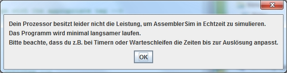

Das Programm wird mit einem Doppelklick auf die "AssemblerSim.jar" gestartet.
Je nachdem, ob der PC den Systemanforderungen entspricht, kann während des Programmstarts folgende Meldung erscheinen:
Das Programm ist trotz der Meldung lauffähig. Es ist allerdings darauf zu achten, dass z.B. bei Timern, Warteschleifen, etc. die Werte für die Wartezeit angepasst werden, da das Programm sonst unter Umständen zu langsam läuft.
Weiterhin kann nach dem Start des Programms eine Nachricht erscheinen, dass ein neues Update verfügbar ist. Dieses können Sie per Klick auf "Hilfe" und "Update" installieren.